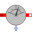

FixedTemperatureFixed temperature boundary condition in Kelvin |
Information
This information is part of the Modelica Standard Library maintained by the Modelica Association.
This model defines a fixed temperature T at its port in Kelvin, i.e., it defines a fixed temperature as a boundary condition.
Parameters (1)
| T |
Value: Type: Temperature (K) Description: Fixed temperature at port |
|---|
Connectors (1)
| port |
Type: HeatPort_b |
|---|
Used in Examples (5)
|
Modelica.Electrical.Analog.Examples
Heating MOS Inverter |
|
|
Modelica.Electrical.Machines.Examples.DCMachines
Test example: Cooling of a DCPM motor |
|
|
Modelica.Fluid.Examples
Simple model of a heating system |
|
|
Modelica.Thermal.HeatTransfer.Examples
Control temperature of a resistor |
|
|
Modelica.Thermal.HeatTransfer.Examples
Second order thermal model of a motor |
Used in Components (7)
|
Modelica.Electrical.Machines.Thermal.AsynchronousInductionMachines
Thermal ambient for asynchronous induction machine with slipring |
|
|
Modelica.Electrical.Machines.Thermal.SynchronousInductionMachines
Thermal ambient for synchronous induction machine with electrical excitation |
|
|
Modelica.Electrical.Machines.Thermal
Thermal ambient for transformers |
|
|
PartialThermalAmbientInductionMachines Modelica.Electrical.Machines.Interfaces.InductionMachines
Partial thermal ambient for induction machines |
|
|
PartialThermalAmbientDCMachines Modelica.Electrical.Machines.Interfaces.DCMachines
Partial thermal ambient for DC machines |
|
|  |
ConditionalFixedHeatFlowSensor Modelica.Thermal.HeatTransfer.Sensors
HeatFlowSensor, conditional fixed Temperature |
|
Modelica.Thermal.HeatTransfer.Interfaces
Partial model to include a conditional HeatPort in order to dissipate losses, used for graphical modeling, i.e., for building models by drag-and-drop |